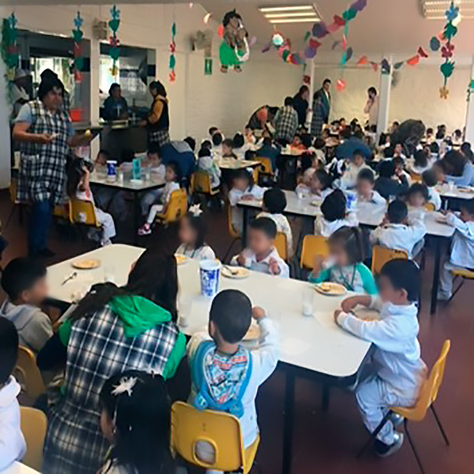

Proporcionar el servicio de desayuno y comida a los niños y niñas acorde con las recomendaciones para su edad y con las características de una dieta correcta, saludable, suficiente y variada. Proporcionar a los niños y niñas las dietas especiales indicadas por el área Médica de los CENDI y Jardín de Niños. Otorgar Orientación Alimentaria a los padres de familia así como dar seguimiento al estado de nutrición de los niños y niñas de los CENDI y Jardín de Niños. Colaborar de manera multidisciplinaria en la prevención, detección y atención de los casos de sobrepeso y obesidad en la población de niños y niñas de los CENDI y Jardín de Niños. Participar en los eventos especiales programados por el área pedagógica con alimentos alusivos a las fechas de celebración, que sean estimulantes del apetito y de la imaginación de nuestros niños y niñas. Fomentar en los niños y niñas la adquisición de buenos hábitos de alimentación.
